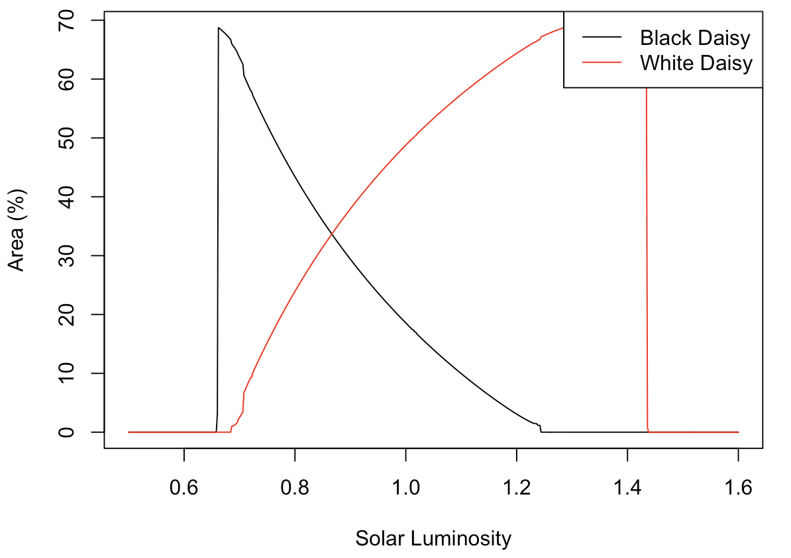
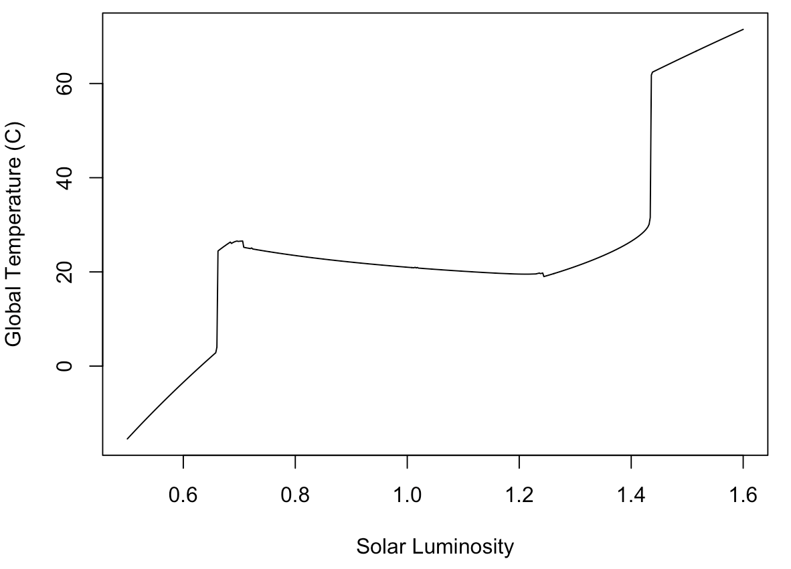

🌍 Modelling Daisyworld: An Exploration of Gaia Theory
Overview
This project explores Daisyworld, a conceptual model proposed by James Lovelock and Andrew Watson (1983) to illustrate the Gaia Hypothesis — the idea that Earth functions as a self-regulating system. By simulating the interactions of black and white daisies with planetary temperature, the project demonstrates how simple feedback loops can regulate climate stability.
Objectives
- Investigate feedback mechanisms in Daisyworld and their role in climate regulation.
- Use differential equations and simulations to replicate Daisyworld dynamics.
- Extend the model to include greenhouse effects and assess its implications for global warming.
Methodology
- Approach: Mathematical modelling + computer simulations.
- Equations: System of differential equations describing daisy population growth, albedo changes, and planetary temperature.
- Simulation Process:
- Initialize daisy populations, albedo, and solar luminosity.
- Iterate across luminosity levels, updating daisy growth and planetary temperature.
- Record global temperature and population dynamics under varying conditions.
Key Findings
- Self-regulation:
- White daisies (high albedo) reflect sunlight and thrive in cooler conditions.
- Black daisies (low albedo) absorb heat and dominate in warmer conditions.
-
Together, they maintain planetary temperature within a habitable range.
-
Simulation Results:
- As solar luminosity increases, black daisies decline while white daisies flourish.
-
Planetary temperature stabilizes despite external forcing — evidence of feedback-driven homeostasis.
-
Model Extension: Adding greenhouse gas parameters highlights how climate feedbacks interact with external stressors.
Visualizations

Figure 1. Black daisies decline while white daisies thrive as luminosity rises.

Figure 2. Planetary temperature stabilizes despite increasing luminosity, showing feedback regulation.
Applications
- Global Warming Analogy: Demonstrates how life-planet feedback loops can mitigate climate change.
- Education: Provides an accessible tool for teaching feedback systems in ecology and climate science.
- Model Validation: A starting point for developing more complex biosphere–climate interaction models.
Conclusion
The Daisyworld model illustrates how life and environment co-evolve through feedback mechanisms. While simplified, it highlights the principles of self-regulation, ecological resilience, and the Gaia Hypothesis. Extensions incorporating greenhouse gases and additional species broaden its relevance to climate science, ecology, and education.
⚠️ Limitations: Daisyworld simplifies reality — it omits many species, feedbacks, and external influences. Its value lies more in conceptual clarity than in predictive accuracy.